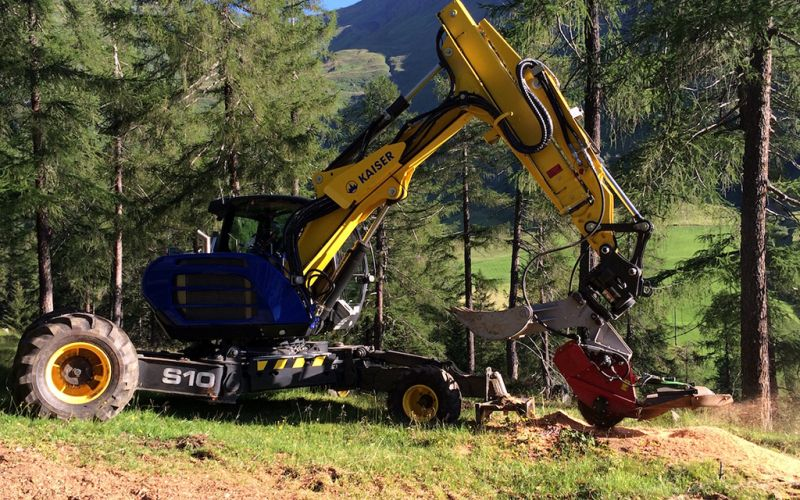
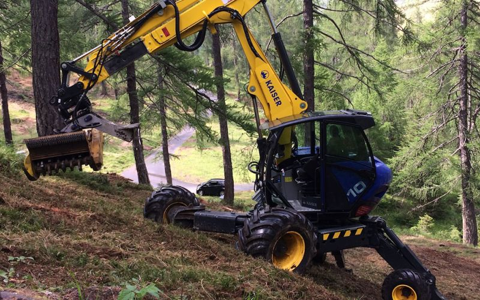
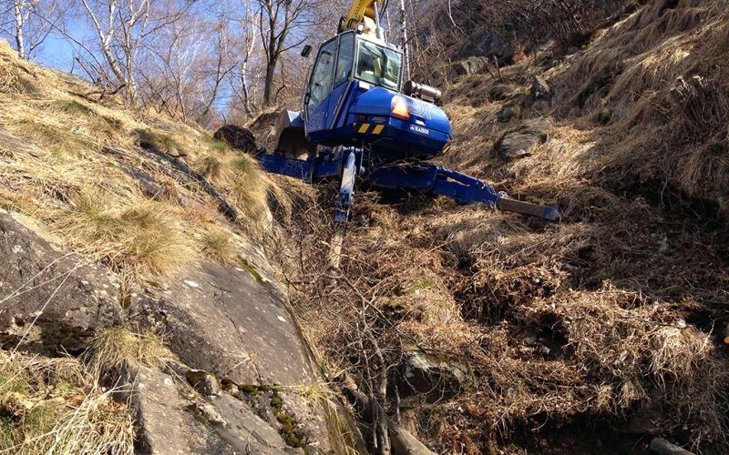
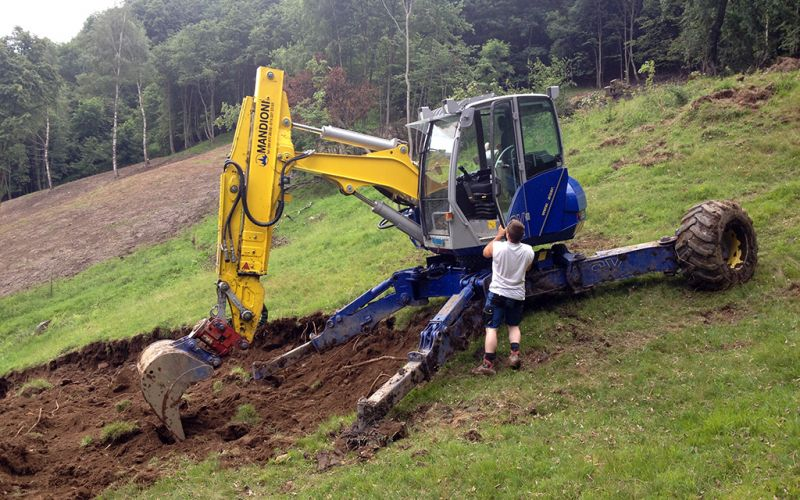
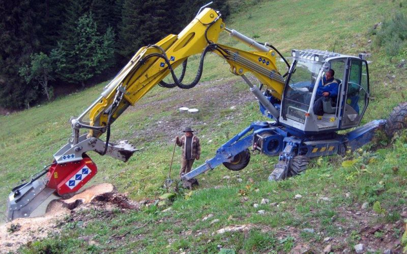
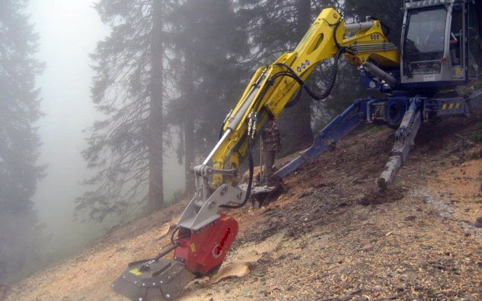
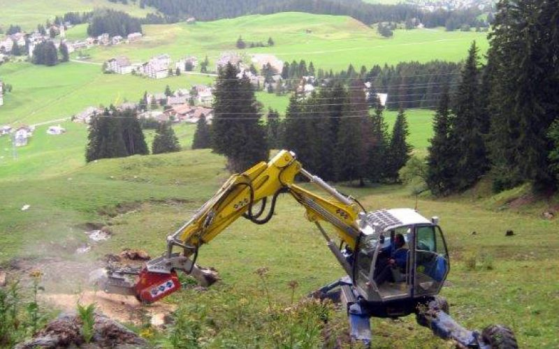
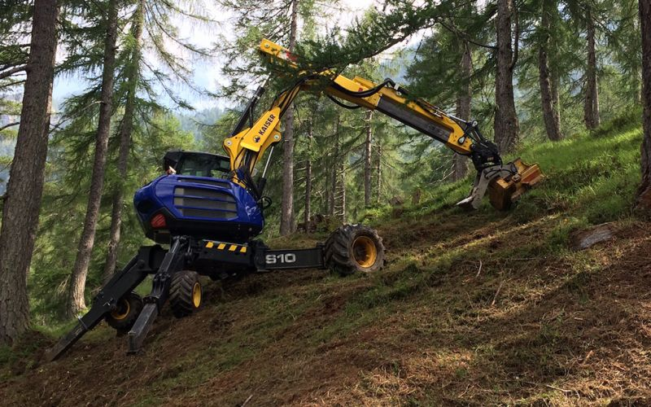
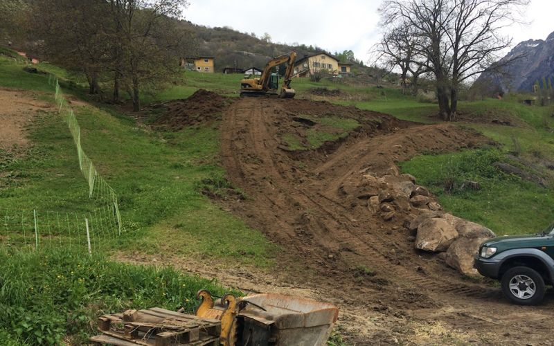
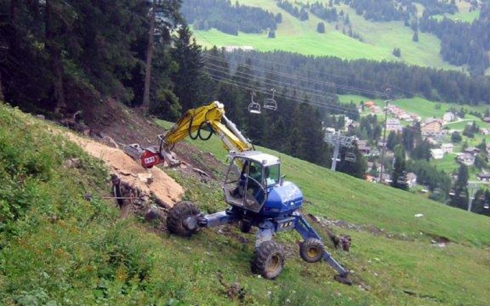

6723 PRUGIASCO - Telefono / Fax 091 871 26 58 - Mobile 079 337 33 50 - E-mail: info@mandioni-costruzioni.ch
FORESTALE
La Mandioni costruzione è specializzata nel rispristino, nella pulizia e nel recupero di pascoli alpestri e di superfici boschive; in particolar modo dispone di macchinari di ultima generazione che permettono di eseguire fresature dei colli dei ceppi, senza però estrapolarne le radici e senza movimentare lo strato di vegetazione adiacente.
Siamo inoltre in grado di eseguire, per mezzo di teste trincianti e frese, lavori di pulizia di scarpate e fresature di tracciati esistenti o nuovi per enti pubblici e privati.











